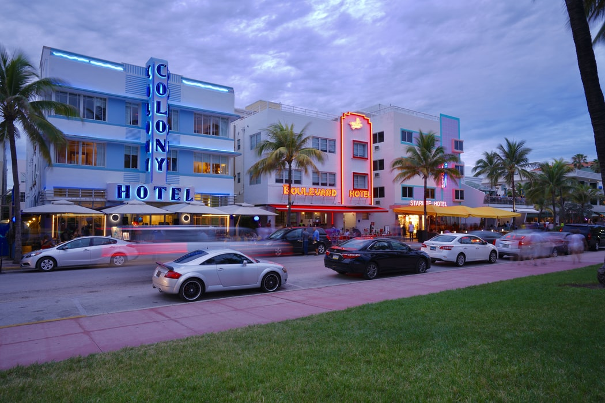

Miami
Miami is nicknamed the "Capital of Latin America" and is the largest city with a Cuban-American plurality. Greater Downtown Miami has one of the largest concentrations of international banks in the United States, and is home to many large national and international companies.